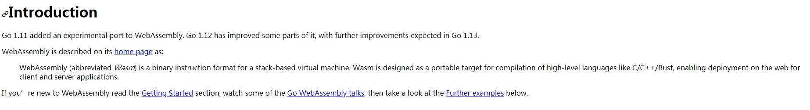
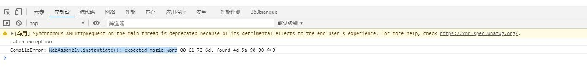
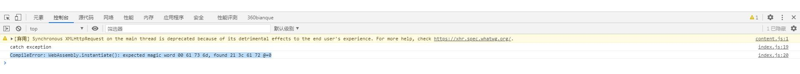
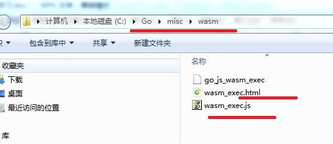
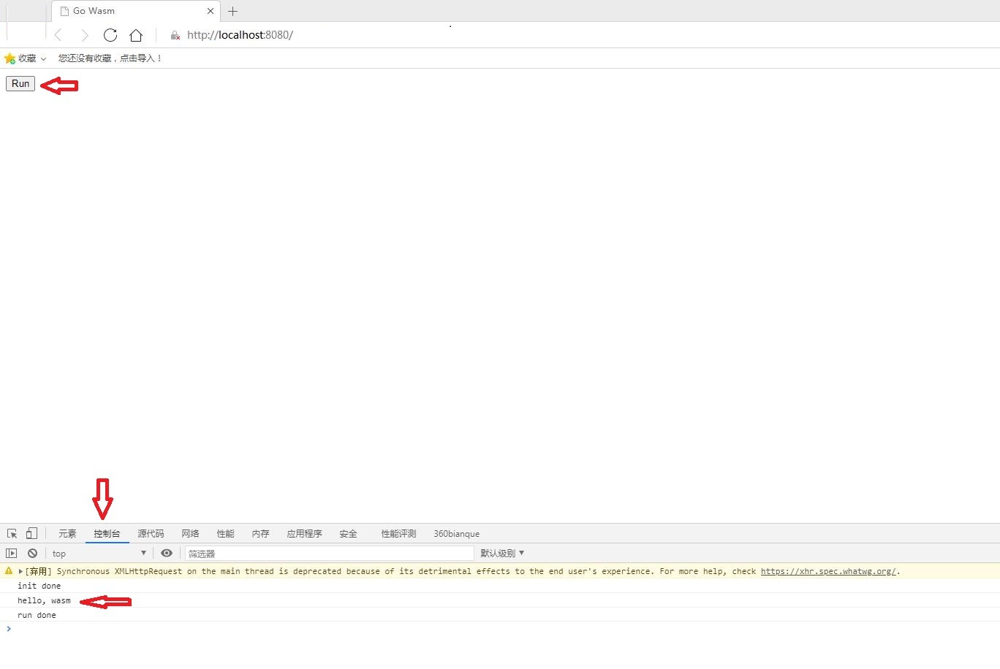
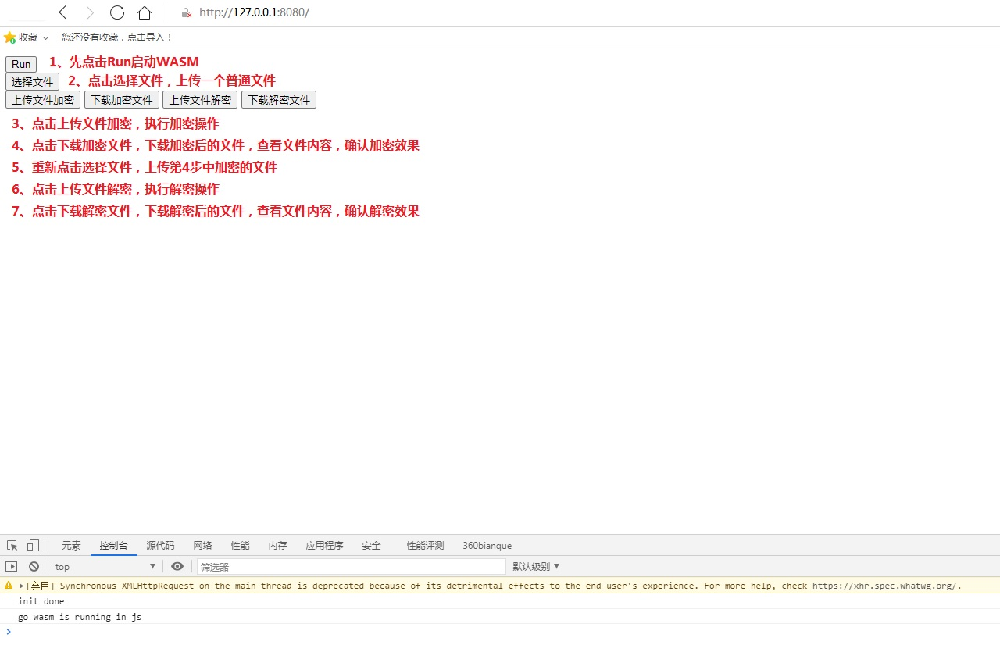
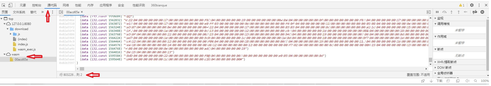

WASM，WEB的第4种语言。如果说nodejs是让前端码农打通后端直升为全栈程序员的捷径，那么WASM很可能是让后端码农打通前端的另一个蹊径。Golang，21世纪的C语言，Golang原生支持WASM，Golang还有自己的汇编以及cgo，不了解一下Golang与WASM，感觉会错过了几个亿。
Golang与WASM
授之与渔
本文内容的出处。学习新技术新知识，通常也离不开以下方法：
- 搜索。首先看一些博客，快速了解个大概，本文内容也参考了一些博客文章，特别是这一篇：关于Go即将支持的WebAssembly的一些注意事项
- 书。博客受篇幅所限，比较难体系的进行介绍，而书则一般会系统的进行讲解，本文参考了：柴树彬、丁尔男《WebAssembly标准入门》第七章
- 官网。不管是博客还是书，其知识来源都是官网，在看完别人的经验后，回到官网才能正本清源，掌握核心正确的内容，因此参考官网：Golang WebAssembly
- 理论指导实践，实践检验真理。动手试一试，基本就能了解个大概了。
结论
因为卷的厉害，大家都比较急躁，能拿来主义是再好不过了，因此先给出本文的结论，以便决定是否值得继续往下看： - 基本上可以通过WASM用golang取代javascript写代码。
- 但避免不了学习javascript语法。特别是如果想完全不写javascript代码的话，则必须在golang里面按照javascript的语法写一些与浏览器、html交互的代码，另外也必须掌握javascript和golang的数据类型转换。也就是说，有一部分的javascript代码，只是从js文件里面迁移到go文件里面而已，不掌握javascript是写不出相关的代码的。
- golang写的代码适合运行消耗cpu的任务，javascript写的代码适合运行与浏览器和html交互、与io和异步执行相关的任务，这样整体上能发挥各自的性能优势。
- 综上，应该是javascript+WASM（golang）。引入WASM可以少写一些javascript代码，少掌握一些javascript的技术，并带来消耗cpu的任务的性能提升，以及引入一些非javascript的工具和算法库，但暂时无法完全取代javascript的地位。
介绍
Golang
21世纪的C语言，具体不介绍了，不具备golang背景的可以看别的后端语言如何支持WASM的文章。WASM
WebAssembly，简单说就是一种网页汇编语言，可以直接用她写类汇编的代码，然后编译成WASM字节码，同样也可以把其他高级语言（Rust、C、C++、Golang等）编译成WASM字节码，然后在网页上加载WASM字节码并执行其中的方法。其在WEB中的作用与javascript基本一致，不过更底层，可以说是javascript的补充。Golang对WASM的支持
参考官网的介绍，Go从1.11开始支持WebAssembly
生成WASM的GO文件
参考官网的介绍1
2
3
4
5package main
import "fmt"
func main() {
fmt.Println("Hello, WebAssembly!")
}
生成WASM文件
参考官网的介绍1
2
3
4
5#set GOARCH=wasm
export GOARCH=wasm
#set GOOS=js
export GOOS=js
go build -o a.out.wasm hello.go
生成的文件放在当前目录下即可
注意
参考官网的介绍
- 如果没有设置环境变量就进行go build，会报错：WebAssembly.instantiate(): expected magic word
 - 如果go程序不是package main，也会报错：WebAssembly.instantiate(): expected magic word。package main编译出来的文件会比较大（估计是判断为main的话，则增加了很多暴露给javascript的方法），而非package main的则会较小。
wasm_exec.js
参考官网的介绍，需要把golang安装目录下的该文件拷贝到当前目录下cp "$(go env GOROOT)/misc/wasm/wasm_exec.js"
该文件的作用主要是起到桥梁的作用，引入GO生成的WASM中的方法，以及暴露一些方法给GO代码调用，同时提供一些入口函数让前端引入GO的WASM文件时进行初始化。wasm_exec.html
官网和书都没有提到这个文件，只是说要创建一个index.html。但是博客提到了，实际在上述目录中，golang已经为我们准备了这个index.html的模板，就是wasm_exec.html。

同样，把该文件拷贝到当前目录下，并重命名为index.html。
然后，修改其中的fetch("test.wasm")，替换为上面生成的WASM文件，即fetch("a.out.wasm"），就可以了。当然也可改为完整的文件获取路径，比如：fetch("http://localhost:8080/download/a.out.wasm"）。
观察这个html，可发现该语句：<script src="wasm_exec.js"></script>，通过这一语句引入了之前的wasm_exec.js文件。通过web服务器启动
参考官网和博客，不想引入别的新东西，直接用golang写一个http服务server.go，非常简单1
2
3
4
5
6
7
8
9
10
11
12
13
14
15
16
17
18package main
import (
"net/http"
)
func main() {
mux := http.NewServeMux()
mux.Handle("/", http.FileServer(http.Dir(`.`)))
server := &http.Server{
Addr: ":8080",
Handler: mux,
}
server.ListenAndServe()
}
执行go run server.go启动程序开启http服务，打开浏览器http://localhost:8080，按下F12打开控制台观察到输出：（截图稍有不同，因为加了一些调试信息）

一个实际应用的例子–在前端使用国密对文件进行加解密
通过上面的demo可以对整体有个大致的了解，接下来以一个实际应用的场景为例加深认识。例子主要是在前端使用国密对文件进行加解密，加解密算法库使用Golang的，通过WASM引入到前端。
背景
一般比较少在前端进行文件加解密，通常是先用工具加密文件，然后再上传浏览器，接着tls加密传输到服务器端。这里的例子只是一个尝试，当然也可能存在某些必须如此实现的场景。
值得注意的是，在浏览器端按F12是能看到完整的javascript代码的，因此会暴露密钥以及加密算法，浏览器的缓存机制也会导致存在泄露的风险。通常可以通过代码压缩和代码混淆之类的工具做一些改进，缓存也可以手动清理。因此，在这里如果引入使用WASM的话，也是一种值得尝试的类代码混淆的方式。
另一方面，目前前端javascript的加解密库主要是非国密的，国密的开源库有那么几个，但是性能好像不太理想，因此也值得尝试把Golang的国密开源库通过WASM引入到前端，验证WASM是否确实能够解决性能问题。
程序
index.html
在上述demo的index.html中，增加如下文件上传下载的操作按钮以及对应的响应事件javascript代码。
在代码中，只有goWasmEncrypt、goWasmDecrypt两个方法是未知的，其它都是原生的内容，可以直接运行验证。1
2
3
4
5
6
7
8
9
10
11
12
13
14
15
16
17
18
19
20
21
22
23
24
25
26
27
28
29
30
31
32
33
34
35
36
37
38
39
40
41
42
43
44
45
46
47
48
49
50
51<body>
<script>
var fileName
var encryptFile
function submitFile(isEn) {
const files = document.getElementById("f1").files[0]
alert("file size: " + files.size)
fileName = files.name
var reader = new FileReader();
reader.onload = function (event) {
var byteArray = new Uint8Array(event.target.result);
var date1 = new Date()
if (isEn) {
encryptFile = goWasmEncrypt("1234567890abcdef", byteArray);
} else {
encryptFile = goWasmDecrypt("1234567890abcdef", byteArray);
}
var date2 = new Date()
var last = date2.getTime() - date1.getTime()
alert("elapse time: " + last)
};
reader.readAsArrayBuffer(files)
}
function downloadFile(isEn) {
var url = window.URL.createObjectURL(
new Blob([encryptFile])
)
var link = document.createElement('a')
link.style.display = 'none'
link.href = url
if (isEn) {
link.download = fileName + "_wasm_en"
} else {
link.download = fileName + "_wasm_de"
}
document.body.appendChild(link)
link.click()
window.URL.revokeObjectURL(url)
}
</script>
<div>
<input type="file" id="f1" />
</div>
<input type="button" value="上传文件加密" onclick="submitFile(true)" />
<input type="button" value="下载加密文件" onclick="downloadFile(true)" />
<input type="button" value="上传文件解密" onclick="submitFile(false)" />
<input type="button" value="下载解密文件" onclick="downloadFile(false)" />
</body>
gm.go
goWasmEncrypt、goWasmDecrypt两个方法，需要通过下面go程序中的js.Global().Set()方式从go中暴露到javascript侧。
官网首页没有介绍，但是博客和书都提到了，就是main程序必须一直执行，所以下面通过channel的方式让main程序一直运行。同样的，要执行这个例子，打开浏览器后，必须先按一次run按钮，把main程序执行启来，然后才能接着点后续的”上传文件加密”等按钮。
下面引用到的国密开源库，是github.com/tjfoc/gmsm，具体可参考github上的说明。1
2
3
4
5
6
7
8
9
10
11
12
13
14
15
16
17
18
19
20
21
22
23
24
25
26
27
28
29
30
31
32
33
34
35
36
37
38
39
40
41
42
43
44
45
46
47
48
49
50
51
52
53
54
55
56
57
58
59
60
61
62
63
64
65
66
67
68
69
70
71
72
73
74
75
76
77
78
79
80
81
82
83
84
85
86
87
88
89
90
91
92
93
94
95
96
97
98
99
100
101
102
103
104
105
106
107
108
109
110
111
112
113
114
115
116package main
import (
"bytes"
"fmt"
"log"
"crypto/cipher"
"github.com/tjfoc/gmsm/sm4"
"syscall/js"
)
func main() {
fmt.Println("go wasm is running in js")
done := make(chan int, 0)
js.Global().Set("goWasmEncrypt", js.FuncOf(goWasmEncrypt))
js.Global().Set("goWasmDecrypt", js.FuncOf(goWasmDecrypt))
<-done
}
func goWasmEncrypt(this js.Value, args []js.Value) interface{} {
// 从js读取
key := args[0].String() //"1234567890abcdef"
data := make([]byte, args[1].Length())
js.CopyBytesToGo(data, args[1])
eData := processSM4(key, data, true)
// 返回到js
res := js.Global().Get("Uint8Array").New(len(eData))
js.CopyBytesToJS(res, eData)
return res
}
func goWasmDecrypt(this js.Value, args []js.Value) interface{} {
// 从js读取
key := args[0].String() //"1234567890abcdef"
data := make([]byte, args[1].Length())
js.CopyBytesToGo(data, args[1])
eData := processSM4(key, data, false)
// 返回到js
res := js.Global().Get("Uint8Array").New(len(eData))
js.CopyBytesToJS(res, eData)
return res
}
//github.com/tjfoc/gmsm/API使用说明.md
//## SM4分组密码算法 - SM4 block cipher algorithm
//遵循的SM4标准号为: GM/T 0002-2012
func processSM4(sKey string, data []byte, isEn bool) []byte {
// 128比特密钥
key := []byte(sKey)
// 128比特iv
iv := make([]byte, sm4.BlockSize)
if isEn {
ciphertxt, err := sm4Encrypt(key, iv, data)
if err != nil {
log.Fatal(err)
}
return ciphertxt
} else {
text, err := sm4Decrypt(key, iv, data)
if err != nil {
log.Fatal(err)
}
return text
}
}
//#### NewCipher
//创建SM4密码分组算法模型，参数key长度只支持128比特。
func sm4Encrypt(key, iv, plainText []byte) ([]byte, error) {
block, err := sm4.NewCipher(key)
if err != nil {
return nil, err
}
blockSize := block.BlockSize()
origData := pkcs5Padding(plainText, blockSize)
blockMode := cipher.NewCBCEncrypter(block, iv)
cryted := make([]byte, len(origData))
blockMode.CryptBlocks(cryted, origData)
return cryted, nil
}
func sm4Decrypt(key, iv, cipherText []byte) ([]byte, error) {
block, err := sm4.NewCipher(key)
if err != nil {
return nil, err
}
blockMode := cipher.NewCBCDecrypter(block, iv)
origData := make([]byte, len(cipherText))
blockMode.CryptBlocks(origData, cipherText)
origData = pkcs5UnPadding(origData)
return origData, nil
}
// pkcs5填充
func pkcs5Padding(src []byte, blockSize int) []byte {
padding := blockSize - len(src)%blockSize
padtext := bytes.Repeat([]byte{byte(padding)}, padding)
return append(src, padtext...)
}
func pkcs5UnPadding(src []byte) []byte {
length := len(src)
unpadding := int(src[length-1])
return src[:(length - unpadding)]
}
演示界面操作

结论
- WASM能实现一定程度的代码混淆，参考如下截图，要破解80万行的WebAssembly汇编代码逻辑，非专业人士应该比较困难，不像javascript那样，只要是前端码农应该都能边看边猜。
 - 让WASM负责消耗CPU类型的任务，也就是这里的加解密，性能会有不错的提升。但注意不要让WASM执行文件读取等IO操作，否则执行的效率会打折扣。
以100MB文件作为测试数据：
语言|加密耗时|解密耗时
:–|:–|:–
golang使用go build编译后的可执行程序|1到2秒|2到3秒
通过过WASM把上述golang的程序引入到前端|20到30秒|10到20秒
javascript开源库|1分钟以上|1分钟以上 - 生成的WASM文件在3MB左右，比起js的几k，几十k，大了上百倍。不过官网上也提供了压缩的方式，可以进一步参考验证。
- IE不支持WASM，虽然目前普遍不用IE了，但始终还是有用IE的用户。